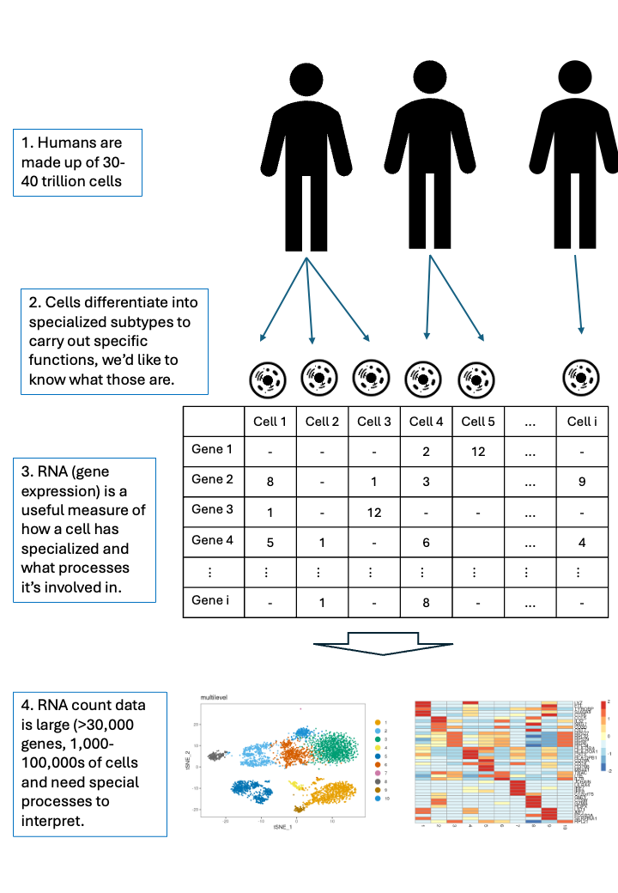

scRNA-seq background
Michael Lynch
School of Medicine, University of Limerickmichael.lynch@ul.ie Source:
vignettes/a_background.Rmd
a_background.RmdSingle-cell RNA-seq
- Single-cell data, as the name suggests, is RNA (gene expression) measured at the level of single cells.
- The data is tabular, and represents a count of how many of each RNA was measured in each cell when the experiment was carried outl
- Cells are dynamic, so think of it as a snapshot of the cells state at a moment in time.
- Cells differentiate and specialise, meaning they have a hierarhical structure.
knitr::include_graphics("images/single_cell_data.png")
RNA extracted from single cells can be measured and analysed.
Exercise
Before diving into the hands-on coding, consider
- How could you preprocess the data?
- What type of questions could you ask from the data?
- How could you verify your interpretation of the data?
sessionInfo()
#> R version 4.6.1 (2026-06-24)
#> Platform: x86_64-pc-linux-gnu
#> Running under: Ubuntu 24.04.4 LTS
#>
#> Matrix products: default
#> BLAS: /usr/lib/x86_64-linux-gnu/openblas-pthread/libblas.so.3
#> LAPACK: /usr/lib/x86_64-linux-gnu/openblas-pthread/libopenblasp-r0.3.26.so; LAPACK version 3.12.0
#>
#> locale:
#> [1] LC_CTYPE=en_US.UTF-8 LC_NUMERIC=C
#> [3] LC_TIME=en_US.UTF-8 LC_COLLATE=en_US.UTF-8
#> [5] LC_MONETARY=en_US.UTF-8 LC_MESSAGES=en_US.UTF-8
#> [7] LC_PAPER=en_US.UTF-8 LC_NAME=C
#> [9] LC_ADDRESS=C LC_TELEPHONE=C
#> [11] LC_MEASUREMENT=en_US.UTF-8 LC_IDENTIFICATION=C
#>
#> time zone: Etc/UTC
#> tzcode source: system (glibc)
#>
#> attached base packages:
#> [1] stats graphics grDevices utils datasets methods base
#>
#> other attached packages:
#> [1] BiocStyle_2.41.0
#>
#> loaded via a namespace (and not attached):
#> [1] digest_0.6.39 desc_1.4.3 R6_2.6.1
#> [4] bookdown_0.48 fastmap_1.2.0 xfun_0.61
#> [7] cachem_1.1.0 knitr_1.52 htmltools_0.5.9
#> [10] rmarkdown_2.32 lifecycle_1.0.5 cli_3.6.6
#> [13] sass_0.4.10 pkgdown_2.2.1 textshaping_1.0.5
#> [16] jquerylib_0.1.4 systemfonts_1.3.2 compiler_4.6.1
#> [19] tools_4.6.1 ragg_1.5.2 bslib_0.12.0
#> [22] evaluate_1.0.5 yaml_2.3.12 BiocManager_1.30.27
#> [25] otel_0.2.0 jsonlite_2.0.0 rlang_1.3.0
#> [28] fs_2.1.0 htmlwidgets_1.6.4